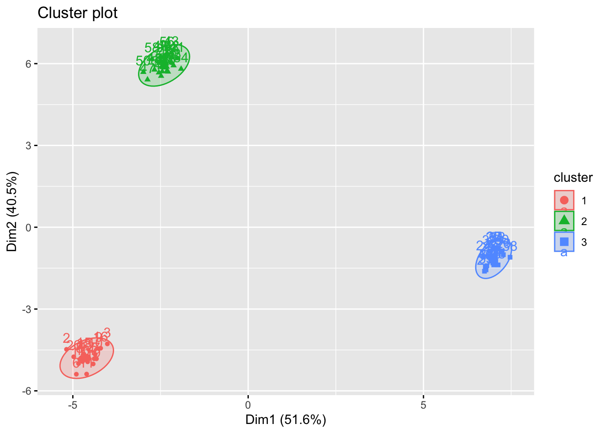

In this session, you are going to get some hands-on practice of how clustering works in R.
In exercise 1, you will perform K-means cluster analysis on simulated data;
In exercise 2, you will perform K-means and K-medoids cluster analysis on a data set with higher complexity than the Iris one;
In exercise 3, you will examine how to combine cluster analysis and correspondence analysis.
Exercise 1
In this exercise, we will simulate data, and then perform PCA and K-means clustering on the data.
We are required to generate a data set with 20 observations in each of three classes (i.e. 60 observations in total), and 50 variables. Read and run the code given below which will help you to start:
# Part (a) generate data:#K =3# the number of classesn =20# the number of samples per classp =50# the number of variablesset.seed(123)# Create data for class 1:X_1 =matrix( rnorm(n*p), nrow=n, ncol=p )for( row in1:n ){ X_1[row,] = X_1[row,] +rep( 1, p )}# Create data for class 2:X_2 =matrix( rnorm(n*p), nrow=n, ncol=p )for( row in1:n ){ X_2[row,] = X_2[row,] +rep( -1, p )}# Create data for class 3:X_3 =matrix( rnorm(n*p), nrow=n, ncol=p )for( row in1:n ){ X_3[row,] = X_3[row,] +c( rep( 1, p/2 ), rep( -1, p/2 ) )}X <-rbind(X_1, X_2, X_3)dim(X)
[1] 60 50
Task 1a
Perform K-means clustering on the observations with \(K = 3\). How well do the clusters that you obtained in K-means clustering compare to the true class labels? Use fviz_cluster function for visualisation.
Solution to Task 1a
Click for solution
# Kmeans on the original datalibrary(factoextra)
Loading required package: ggplot2
Welcome! Want to learn more? See two factoextra-related books at https://goo.gl/ve3WBa
What is clear from this result is that the clusters are well separated. Indeed we generated non-overlapping clusters.
Task 1b
To check the optimal number of clusters, we perform the silhouette analysis. First run \(K\)-means clustering for different sizes of \(K = 2, 3, \ldots, 6\).
However, the silhouette width is maximised at \(k=2\) here. Why? because the function fviz_nbclust() use the kmeans() inside but with the default inputs e.g. nstart is set to 1 and iter.max is set to 10. If we run the above code built on silhouette() function after tweaking the objects kmean1, kmean2, …, kmean6 again without set.seed() and using different nstart e.g. nstart=1, then it will give different results whenever you run the code. To get a robust result, it is important to try different initial clusters and select the best results which you can control by changing nstart option in kmeans() function.
Task 1d
Repeat the previous Tasks with the updated data shown below (only the variables \(X_2\) and \(X_3\) are updated).
# Part (a) generate data:#K =3# the number of classesn =20# the number of samples per classp =50# the number of variables# Create data for class 1:X_1 =matrix( rnorm(n*p), nrow=n, ncol=p )for( row in1:n ){ X_1[row,] = X_1[row,] +rep( 1, p )}# Create data for class 2:X_2 =matrix( rnorm(n*p), nrow=n, ncol=p )for( row in1:n ){ X_2[row,] = X_2[row,] +rep( -5, p )}# Create data for class 3:X_3 =matrix( rnorm(n*p), nrow=n, ncol=p )for( row in1:n ){ X_3[row,] = X_3[row,] +c( rep( 5, p/2 ), rep( -5, p/2 ) )}X <-rbind(X_1, X_2, X_3)Xs <-scale(X) kmean.out =kmeans(Xs, centers=3, nstart=25)fviz_cluster(kmean.out, Xs, ellipse.type ="norm")

Are the optimal \(K\)s obtained from the two methods above the same or do they differ?
Click for solution
It is highly likely that the optimal \(K\)s are the same due to stronger signal (i.e. clusters are more clearly detected even by eyes), but there is a low chance of discrepancy due to the randomness of initial choices of centroids.
Exercise 2
Start by reading and exploring the UK elections dataset
ele <-read.csv('UK_elections.csv')
The number of variables in this data set (58!) is too high to explore them all at once (unless they all belonged to the same low dimensional vector space). It is also too diverse, containing a range of different socio-economic variables (e.g. car ownership, rental status, SeC, work seeking) and demographic variables (age, cohabitation, lone parents, household size) on top of election results. The most obvious thing is to do a cluster analysis on a subset of variables, for example the results in the 2017 election.
# We will create an object that contains only 'Name' (of the constituency) # and number of votes per partyele_sub <- ele[,c(1,6:13)]
Task 2a
For each party in each constituency, convert raw numbers of votes into a percentage share of votes, to take account of differences in population between constituencies.
Solution to Task 2a
Click for solution
# Calculate how many total votes were cast in each constituency ele2017_total <-rowSums(ele_sub[,2:9])# Calculate what percentage of votes went to each party in each constituencypercent2017 <-as.data.frame(apply(ele_sub[,2:9], 2, function(x) (x/ele2017_total)*100))
The resulting data shows that two parties (Conservative and Labour) dominate the elections in most constituencies. It makes sense to start our cluster analysis using only these two numerical variables.
Task 2b
Compute the optimal number of clusters and perform k-means cluster analysis on the data set where only the Labour and Conservative votes are considered.
Solution to Task 2b
Click for solution
We start by analyzing the optimal number of clusters:
Interpretation is not too difficult here: cluster 1 corresponds to constituencies where Conservative votes are higher, while cluster 2 corresponds to constituencies where Labour votes are higher.
Clustering on Labour and Conservative votes is not particularly useful, as there is quite a simple relationship between them: when one goes up, the other will usually go down. So before we assess our results further, we will include the other political parties.
In this case, there does not seem to be an optimal number of clusters as above. No clear elbow, a faint indication that 8 is the number that optimizes the algorithm. This is an example of a situation where hyerarchical clustering might be useful, but we haven’t seen how to perform that, so just keep this in mind for the next workshop.
Task 2c
Perform k-medoids cluster analysis on the data set where all the parties are considered for 4, 5 and 6 clusters. For each output, compare size and centers.
To look at the centers, look at the i.med category of output:
pam.res4$i.med
[1] 569 203 450 76
pam.res5$i.med
[1] 166 351 511 106 76
pam.res6$i.med
[1] 166 351 511 8 116 76
At five clusters the situation seems to get stable (4 out of 5 of the centers are in common with the six clusters analysis). To understand the clusters, we can look at the centers as prototypical constituencies for the corresponding cluster.
Cluster 1 seems to be associated with Labour voters
Cluster 2 seems to be associated with a mix of Conservative and UKIP voters
Cluster 3 seems to be associated with Conservative voters not counted in cluster 2 (likely “moderate conservatives”)
Cluster 4 seems to be associated with LiberalDemocratic votes
Cluster 5 seems to be associated with Green votes (this is a funny one because it consists of a single point, quite less informative than the others).
To plot the result of our cluster analysis, fviz_cluster() is not an ideal command (PC1 and PC2 do not encode enough variability). With a little effort, we can figure out how to do this by hand:
Finding clusters is a good things in itself: it allows to uncover hidden pattern in a data set as long as it is done in a reasonable way (e.g. encoding enough variance or using prior knowledge that the observations are naturally split into groups). However, once appropriate clusters are discovered, they can be used for additional data exploration. In this exercise you will see how to apply the results of cluster analysis obtained in Exercise 2 to analyze your data in a more structured way.
Task 3a
Perform the k-medoids cluster analysis shown above using the 2019 election data and comment on possible differences with respect to the the 2017 data.
Solution to Task 3a
Click for solution
You first prepare the data:
ele.19<- ele[,c(1,15:22)] ele2019_total <-rowSums(ele.19[,2:9])# Calculate what percentage of votes went to each party in each constituencypercent2019 <-as.data.frame(apply(ele.19[,2:9], 2, function(x) (x/ele2019_total)*100))
This situation looks even stabler than the one for 2017: from three clusters on, adding one cluster essentially splits a big cluster into two. By contrast, from two to three, a new cluster containing a mix of the previous two seem to emerge (hinting that a third party with a profile between Labour and Conservative was not accounted for in the “two clusters scenario”).
Now it is reasonable to make a choice of clusters (from 3 to 5) and explore their features. A good choice is 4, since in the 5 clusters scenario there is a cluster of size 5 that we might want to ignore (it might be a good idea to remove the observation n.76 too, but you have to do it manually and doesn’t change the final outcome).
Cluster 1 seems to be associated with Labour voters
Cluster 2 seems to be associated with a mix of Conservative, Liberal and Green voters
Cluster 3 seems to be associated with Conservative voters not counted in cluster 2 (possibly “social conservatives”, since they are farther away from liberal democratics)
Cluster 4 seems to be associated with Green votes (the usual Brighton Pavillion constituency).
Plotting some of the labelled observation gives an idea of the positioning of these clusters.
Several things can be said about the difference with 2017. The most interesting might be the different divide between conservatives. This is mainly due to Brexit Party in 2019 being much less popular than UKIP in 2017.
A word of caution: the cluster associated with Labour votes in 2019 is much bigger than the one in 2017. This doesn’t mean that Labour performed better, just that the constituencies that had a higher percentage of labour votes were more similar to each other, so the algorithm clustered them together. But those red labels don’t correspond to seats won by labour by any means!
Clustering gives you a way to associate a new categorical variable (the cluster type) to your observations. This, in turn, allows to use Correspondence Analysis to check association of the cluster type with other categorical variables. Unfortunately, the original Elections_UK data set contains only numerical variables. Fortunately, we can easily turn these into categorical ones.
Task 3b
Choose a variable that you want to know if it is associated with any particular cluster (The solution will use X.seekingwork associated with people seeking work, and X.Students associated with student population). Change the value of each observation for that variable from numerical to categorical. A good way to do this is to put observations into buckets (e.g. “Low”, “Average” ,“High” number of students) according to their numerical values.
Solution to Task 3b
Click for solution
You need to add a new variable to the ele data frame. You can do this using the within() command.
Here is an example that uses the X.seekingwork variable:
We are now almost ready for the correspondence analysis.
Task 3c
Create a contingency table where rows are clusters and columns the buckets (e.g. “Very Low”, “Low”, “Average” ,“High”, “Very High” number of students) created earlier. Finally, perform CA to analyze association between cluster type and your chosen variable.
Solution to Task 3c
Click for solution
First, we
table(ele$Students.cat, pam.res4$cluster)
1 2 3 4
Above Average 78 42 23 0
Below Average 49 68 26 0
High 119 16 8 1
Low 23 68 52 0
The correspondence analysis highlights an association between conservative votes (especially Cluster 3 consisting of socially conservative votes) and low number of students registered in the area, while progressive votes live in areas with a high student population.
You can do the same with any variable of your choice, of course:
Similarly, progressive votes are higher in areas with high unemployment rates, while conservative votes are higher in areas with low employment rates. Interestingly, there is not a big difference between socially conservative and conservative votes here.